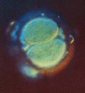
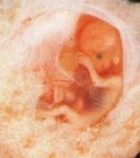
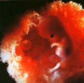
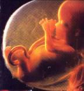

http://www.pms.orthodoxy.ru/uz/default.asp?section=medic&article=text2
Когда начинается человеческая жизнь?
DoctoR
Тут самое интересное - нет конкретного авторства с указанием профессиональных атрибутов и атрибутов обратной связи. Естественно - это творение, заказанное христианским проектом "В защиту жизни" - поэтому, не указав стандартных авторских атрибутов, они избегают профессиональной личной критики автора. Ведь в статье полностью извращена морфология и физиология развития плода. Извращена по принципу "умолчания". Например - пишется "фиксируется работа головного мозга", и опускается то, что на этом сроке мозг не имеет коры. Это значит - еще нет разума - самоидентификации - личности, ведь даже наличие коры - это необходимое, но не достаточное условие возникновения таковой. И прерывание нежелательной беременности на этом этапе требует достижения комфорта только для одной существующей личности - матери. Ну - например, как антибиотики - тоже уничтожают нежелательную жизнь, но не разум.
А вот тут, уважаемый, ты и лажанулся. Кто же про разум говорит? Протесты-то против убиения потенциальных рабов божьих, им и без разума хорошо.
Так может вместо обрезания поголовную лоботомию проводить? Бла-а-алепие! Ни одного шанса лукавому! (c) S.Tiunov
Зачатие. Начало жизни
 Жизнь начинается в момент оплодотворения двух клеток, слияния. Когда мы были такой клеткой, то все, - пол, группа крови, цвет глаз, интеллект и таланты, вкус и строение белков организма, - все это уже было записано в генетическом коде 46 хромосом. Дальше мы только росли и развивались, получая кислород и питание. Нам было предопределено жить около девяти месяцев во чреве матери. С момента зачатия это уже существо, которое никогда раньше не существовало в истории и никогда не будет существовать снова! Эта фотография снята через 30 часов после зачатия. Восемь дней спустя этот индивид останавливает менструацию у матери и контролирует на время беременности ее тело.
DoctoR: C момента оплодотворения до имплантации - нет ничего, кроме плодного яйца. Это период до 15-го дня. Применение терминов "существо" и тем более "индивид" - психологический трюк, имеющий целью "вышибить слезу". И менструация останавливается не 8 дней спустя :-), а сразу после оплодотворения.
У христиан - через восемь. Тормозные они, сами признались...
6 недель: фиксируется работа головного мозга
 Здесь вы видите шестинедельного ребенка, три недели назад у него начало работать сердце и перекачивать кровь, принадлежащую этому ребенку. Он даже может иметь другую группу крови, чем мать. С помощью электроэнцефалографа могут быть записаны его мозговые импульсы, это является юридическим доказательством, что человек живой. Смерть человека определяется прекращением работы головного мозга. Это невероятно важное открытие! Почему же не отмечать и начало жизни тем же самым образом?
Здесь вы видите шестинедельного ребенка, три недели назад у него начало работать сердце и перекачивать кровь, принадлежащую этому ребенку. Он даже может иметь другую группу крови, чем мать. С помощью электроэнцефалографа могут быть записаны его мозговые импульсы, это является юридическим доказательством, что человек живой. Смерть человека определяется прекращением работы головного мозга. Это невероятно важное открытие! Почему же не отмечать и начало жизни тем же самым образом?
DoctoR: Ложь, причем явная. Возраст - 6 недель после зачатия, размер 15 мм - 8 недель (размер 3 см) - это период закладки органов и систем. На 8-й-10-й неделе действительно фиксируются какие-то электрические импульсы, но они никаким краем не могут быть интерпретированы, как ЭЭГ. Более-менее ЭЭГ-образные импульсы фиксируются не ранее 25-26 недели. А дальше вообще идет переворачивание вопроса с ног на голову: да, для констатации смерти индивида применяется определение смерти мозга, но не наоборот! Причем - диагностики именно смерти всего мозга связана с тем, что на настоящем этапе развития науки нет валидных методов диагностирования смерти коры, которая и определяет разум-личность. А в 8-12 недель беременности коры еще нет. Есть зачатки ствола мозга, рудиментарный таламус и спинной мозг. Еще нет субстрата для "разума", "индивида" и прочей метафизики :-). Вывод - фиксация работы мозга даже на 28-й неделе никак не связана с фиксацией того, что появилась индивидуальная разумная жизнь. А если ребенок родится без коры?...
7 недель: может ударить ножкой
 Семидневный ребенок свободно плавает в околоплодной жидкости. Если что-то щекочет его нос или рот, он откидывает голову и реагирует на любое раздражение. В этом возрасте маленький ребенок начинает делать точные движения. Отчетливо прослушивается сердцебиение ребенка.
Семидневный ребенок свободно плавает в околоплодной жидкости. Если что-то щекочет его нос или рот, он откидывает голову и реагирует на любое раздражение. В этом возрасте маленький ребенок начинает делать точные движения. Отчетливо прослушивается сердцебиение ребенка.
DoctoR (все пункты от 7 до 14 недели): Все движения эмбриона носят рефлексивный характер, но никак не
осознанный. Для осознания нужно наличие сознания
:-). Но для наличия сознания необходимо:
1. наличие коры головного мозга - формируется между 20 и 32 неделей
2. миелинизация спинного мозга и нервов - формируется
всю вторую половину беременности - 20-36 неделя.
Разные "хватания", "отдергивания" и пр. - прекрасно наблюдаются и у обезьян
:-)
9 недель: ребенок хватает рукой
 Современные ультразвуковые исследования дают возможность узнать многое из жизни нерожденного ребенка. Видеть своего сына или дочку, двигающихся в утробе своей матери, при помощи УЗИ - это радостное переживание для родителей. Они могут видеть, например, как их малыш сосет палец. Если каким либо предметом прикоснуться к его руке, то он схватит его, а если предмет колется, то ребенок быстро отдернул бы руку (это показали специальные съемки во время абортирования детей).
10-11 недель: ребенок чувствует прикосновение.
 Сейчас он может глотать околоплодную жидкость, в которой плавает. Канал желудочной кишки всасывает пищу. Ребенок мочится и его кишечник слабо сокращается. Такой ребенок убивается методом хирургического аборта. Исследования показали, что не родившиеся дети так же, как и мы, чувствуют боль и прикосновения, свет, тепло и шум.
11 недель: Все системы органов начинают работать

 Эти маленькие человеческие ножки совершенно сформированы. Несмотря на то, что ребенок мог бы стоять на мизинце матери, у него уже есть веки, ногти, отпечатки пальцев, он окончательно сформирован. Начиная с этого возраста, он окончательно сформирован и идет только рост уже существующих органов: имеется скелет, нервная система, кровообращение, дыхание и т.д. Все системы органов начали функционировать. Он живет и ждет своего появления на свет.
Эти маленькие человеческие ножки совершенно сформированы. Несмотря на то, что ребенок мог бы стоять на мизинце матери, у него уже есть веки, ногти, отпечатки пальцев, он окончательно сформирован. Начиная с этого возраста, он окончательно сформирован и идет только рост уже существующих органов: имеется скелет, нервная система, кровообращение, дыхание и т.д. Все системы органов начали функционировать. Он живет и ждет своего появления на свет.
14 недель: чудо развития!
 Ребенок на этом снимке чуть моложе 14 недель. В это время его сердце перекачивает 24 литра крови в сутки! Он становиться уже большим. Матери и врачи! Обратите внимание на это совершенство организма, как вы можете допускать жестокого убийства такого существа. Побойтесь Бога! Это Его творение! И только Ему принадлежит право дать жизнь или забрать ее. Запомните, всякий раз, когда вы наносите боль этому созданию, вы покушаетесь на Создавшего его. И многие убедились, насколько бывает страшен час Его возмездия, насколько страшны муки совести. "Страшно впасть в руки Бога живого".
Also Know As "милосердного"
18 недель: Ребенок полностью сформирован
 Этому замечательному малышу 18 недель и на законном основании он может быть убит. Врачи, умалчивающие правду, говорящие "там ничего нет", подтолкнули женщину на аборт, и у многих после того, как они узнали правду, возникли тяжелые стрессы.
Этому замечательному малышу 18 недель и на законном основании он может быть убит. Врачи, умалчивающие правду, говорящие "там ничего нет", подтолкнули женщину на аборт, и у многих после того, как они узнали правду, возникли тяжелые стрессы.
DoctoR: Опять подмена понятий. Не "полностью" сформирован, а "заложены все органы и системы" - которым только предстоит развиваться. Почему это еще не "новый человек"? Кроме отсутствия коры - разума - осознания - самоидентификации, стоит отметить следующее: плод не в состоянии поддерживать свою жизнь "вне матери", не способен к мышлению, он не способен даже просто дышать...
Жизнеспособен только завтра?
Этому малышу 18 недель. Иногда говорят о понятии "жизнеспособность" Под этим понимается то время, когда ребенок способен выжить вне чрева матери. Не так давно эта грань между жизнью и смертью была 30 недель, потом снизилась, до 28, потом до 25, теперь жизнеспособность приближается к 20 неделям.
Сенсация! 19 недель: ребенок выжил!
 Это Кенни Кинг, родившаяся недоношенной, на сроке беременности 19 недель (полный срок 40 недель). На фотографии она с мамой Елизаветой Кинг. Кенни весила всего 510 грамм при нормальном весе ребенка 2,8-3 кг. Когда была сделана это фотография, девочка весила 2,5 кг.
Это Кенни Кинг, родившаяся недоношенной, на сроке беременности 19 недель (полный срок 40 недель). На фотографии она с мамой Елизаветой Кинг. Кенни весила всего 510 грамм при нормальном весе ребенка 2,8-3 кг. Когда была сделана это фотография, девочка весила 2,5 кг.
Это называется не "сенсация", а "трюкачество". Можно вообще развить плод в "искусственной матке", ну и что? Здесь точно, как ты говорил: "Онанизм - геноцид". Ведь существуют технические методы взять любой сперматозоид, оплодотворить им я-кл, и "вырастить" очень-очень уникального и неповторимого раба божьего...
Дальше - стандартная мелодраматическая муть.
Уважаемые Министры здравоохранения и просвещения, главные врачи клиник, где проводятся аборты, мы умоляем Вас Господом Богом, если эту машину смерти невозможно остановить, то дайте полное просвещение в этих вопросах. Ведь даже на пачках сигарет вы пишете, что это вредит здоровью, тем самым человек имеет полную свободу выбора. Запретите в своих клиниках одобрение абортов, мотивируемых любыми социальными причинами. Перед тем как женщине будет подписано направление на аборт, полностью просветите ее, используя наглядные пособия. Есть множество свидетельств, что женщины, отправившиеся на аборт, не имели представления, что внутри них развивается полностью сформированный организм. Многие женщины заявили протест врачам в сокрытии правды.
Прежде чем девочке стать женщиной, а мальчику мужчиной, разъясните со школьной скамьи всю важность материнства и отцовства, необходимость духовного и нравственного отношения к этому вопросу. Только тогда, когда человек научится уважать и ценить жизнь другого человека, он сможет всецело посвятить себя Родине, Президенту и народу.
PS. В сто первый раз не устану повторять: церковь потеряла свои позиции во всем, что касается естествознания. Поэтому она все сильней цепляется за вопросы, связанные с этикой, моралью и прочей мутью. Применяя свою стандартную методику "Цель оправдывает средства". И полностью игнорируя логику. (Борясь с абортами, они в то же время борются с искусственным зачатием тоже "очень уникальной" жизни, клонированием, и пр.).
Что касается борьбы с абортами, я лишаю церковь всех ее "благородных" целей -
"сохранить жизнь", "не убить" и пр., и оставляю за ней две настоящих цели этой
компании:
1. Появление еще одного "рта" увеличивает комплекс проблем, а, значит, и шанс
"сломаться", обратиться за их решением к церкви.
2. Веками продолжающееся игнорирование права человека самостоятельно решать
свою судьбу, что в конце концов опять-таки приведет его к церкви.